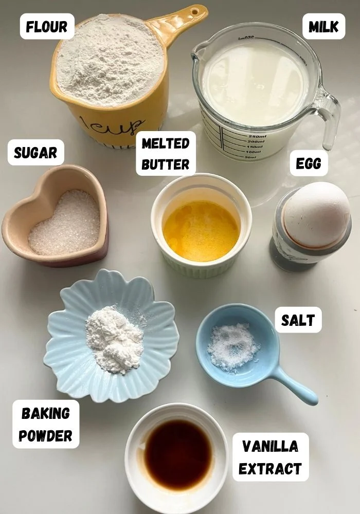

Pancakes

Preparation Time: 20 mins
Difficulty: Easy
Ingredients
- 1 cup all-purpose flour
- 2 tablespoons sugar
- 1 teaspoon baking powder
- 1/2 teaspoon baking soda
- 1 cup milk
- 1 egg
- 2 tablespoons melted butter
- 1 teaspoon vanilla essence
- Pinch of salt
Steps
- In a bowl, mix flour, sugar, baking powder, baking soda, and salt.
- In another bowl, whisk together milk, egg, melted butter, and vanilla essence.
- Gradually combine the wet and dry ingredients to form a smooth batter.
- Heat a non-stick pan and lightly grease it with butter.
- Pour a small amount of batter onto the pan to form a pancake.
- Cook until bubbles appear on the surface, then flip and cook the other side.
- Repeat for remaining batter.
- Stack the pancakes and serve warm.
Tip: Serve with honey, maple syrup, or fresh fruits for extra taste.